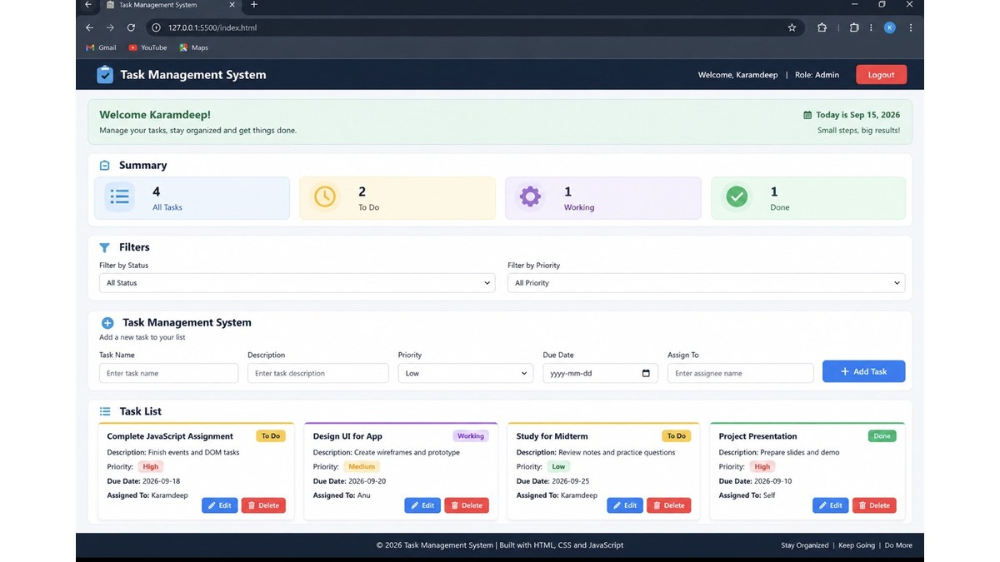

Profile
Hi, I am Karamdeep Singh. I am currently studying Digital Design and Development at North Island College. I have a background in Electronics and Communication Engineering and industrial instrumentation. I enjoy learning new technology, building websites, and improving my design and coding skills.
Back to homepageProjects
Here are some projects I have worked on during my Digital Design and Development studies.

Bamfield Tourism Website
I created a tourism website for Bamfield using HTML and CSS. The website provides information about local attractions, activities, and places to visit. This project helped me practice web page layouts, images, navigation, and CSS styling.

BrewMate Coffee Maker User Flow and drink order application
I created a user flow for a coffee maker application called BrewMate. a drink order application using JavaScript.The flow shows the complete process from placing the cup and selecting a drink to brewing the drink and removing the cup. This project helped me understand user flow and interaction design.As well as Users can choose a drink, select a size, add items to the order, and see the total cost. This project helped me practice JavaScript, functions, events, and working with user input.

Mentoring App Design
I designed a mentoring application that helps connect mentors and mentees. I worked on the landing page, user interface, layout, components, and responsive design for desktop and mobile screens.

Task Management System
I created a task management system where users can add, edit, delete, and organize tasks. The system includes task filters, status information, and task summary counters. This project helped me improve my JavaScript and local storage skills.
Work Experience
Team Member
Tim Hortons - Campbell River, BC
July 2024 - Present
I work with my team to provide good customer service in a fast-paced environment. I prepare orders, help customers, keep the work area clean, and complete daily tasks on time.
Instrumentation Engineer
Sukhjit Starch and Chemicals Ltd. - Phagwara, India
May 2021 - May 2024
I worked with different instruments and equipment in a power plant. My work included checking equipment, solving technical problems, and helping keep plant operations running properly.
Key contributions:
- Worked with different industrial instruments and equipment.
- Helped troubleshoot technical problems during plant operations.
- Supported the team during maintenance and emergency situations.
Trainee Engineer
Wahid Sandhar Sugar Private Ltd. - Phagwara, India
July 2016 - June 2018
I worked with the engineering team and learned about industrial equipment, maintenance, and basic technical tasks.
Key contributions:
- Assisted the engineering team with daily technical work.
- Learned about industrial equipment and instrumentation.
- Helped with basic maintenance and troubleshooting tasks.
Education
North Island College - British Columbia, Canada
Digital Design and Development
Currently studying web development, UI/UX design, JavaScript, and app development.
NSI - Kanpur, India
PG Diploma in Industrial Instrumentation and Process Automation, 2020
Studied industrial instrumentation, process automation, and control systems.
RIET College - Phagwara, India
B.Tech in Electronics and Communication Engineering, 2016
Studied electronics, communication systems, and engineering fundamentals.